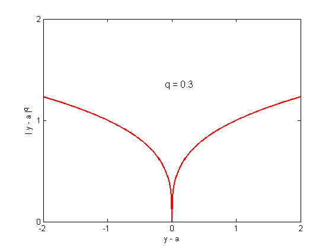
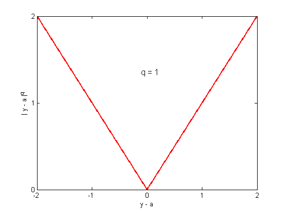
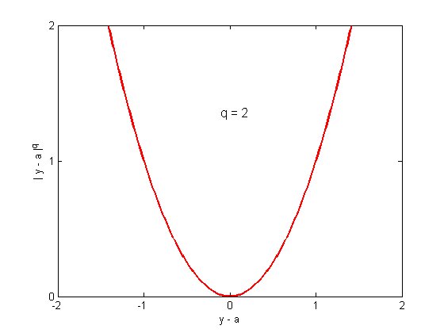
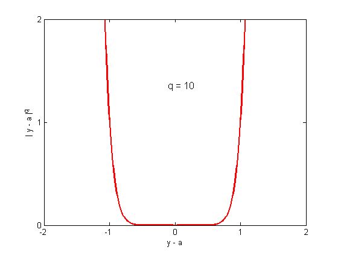
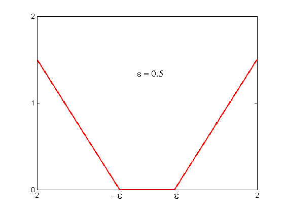

function lossFunctionFig
qvals = [0.3,1,2,10];
for i=1:length(qvals)
plotLoss(qvals(i));
end
hingeLoss(0.5);
function plotLoss(q)
figure;
loss = @(x) abs(x).^q;
x = -2:0.01:2;
plot(x,loss(x),'-r','LineWidth',1.5);
xlabel('y - a');
ylabel('| y - a |^q');
axis([-2,2,0,2]);
set(gca,'XTick',-2:2);
set(gca,'YTick',0:2);
annotation(gcf,'textbox','String',{['q = ',num2str(q)]},'FontSize',12,'FontName','Arial','FitHeightToText','off','LineStyle','none','Position',[0.4842 0.6101 0.1296 0.08278]);
qstr = sprintf('%s', num2str(q));
decloc = strfind(qstr, '.');
if(isempty(decloc)), qstr = strcat(qstr, '.0'); decloc = strfind(qstr, '.'); end;
printPmtkFigure(sprintf('lossFn%s-%s', qstr(1:(decloc-1)), qstr((decloc+1):end)));
end
function hingeLoss(epsilon)
figure;
hinge = @(x)(abs(x)-epsilon).*(abs(x) >= epsilon);
x = -2:0.01:2;
plot(x,hinge(x),'-r','LineWidth',1.5);
axis([-2,2,0,2]);
set(gca,'XTick',[-2,2]);
set(gca,'YTick',0:2);
annotation(gcf,'textbox','String',{'e = 0.5'},'FontSize',14,'FontName','Symbol','FitHeightToText','off','LineStyle','none','Position',[0.47 0.6101 0.1296 0.08278]);
annotation(gcf,'textbox','String',{'-e'},'FontSize',16,'FontName','Symbol','FitHeightToText','off','LineStyle','none','Position',[0.38 0.05797 0.02089 0.06884]);
annotation(gcf,'textbox','String',{'e'},'FontSize',16,'FontName','Symbol','FitHeightToText','off','LineStyle','none','Position',[0.6 0.0579 0.02089 0.06884]);
printPmtkFigure hingeLossFn;
end
end
    